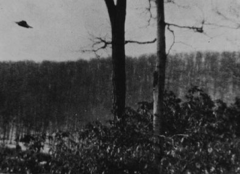

09 Signature du traité entre les gouvernements australien et américain pour
l'installation d'une JDSRF à Pine Gap (Australie).
Face à un auditoire réuni à l'hôtel Scribe de Nice, sous les auspices de l'Union
Rationaliste, le directeur de l'observatoire de Nice, Jean-Claude Pecker, affirme que il est probable que la vie
existe en dehors du monde terrestre.
Observation près du Lac Tiopati (New York) le 18

Près du lac Tiopati (Bear Mountain, New York), sur la rive ouest de la rivière Hudson, 3
pêcheurs remarquent 1 phénomène volant circulaire métallique, couleur bronze, estimé à 6 m de diamètre. L'un d'entre
eux, Vincent Perna, prend 4 clichés avant qu'il s'éloigne sans un bruit au-dessus de Stockbridge Mountain.
Observation à Monroe (Oregon)Cas
Blue Book n° 11239 non résolu.
L'équipage d'un DC-8 de Canadian Pacific faisant Lima-Mexico voit 2 lumières blanches
variant d'intensité se rapprochant et s'éloignant entre elles et de l'avion. 2 rayons en V en partent. Les lumières
se rapprochent jusqu'à l'aile gauche. Une s'arrête. Une rangée de lumières est entre les 2 lumières blanches. Le
tout pendant , puis tout disparaît vers l'arrière de l'avion.